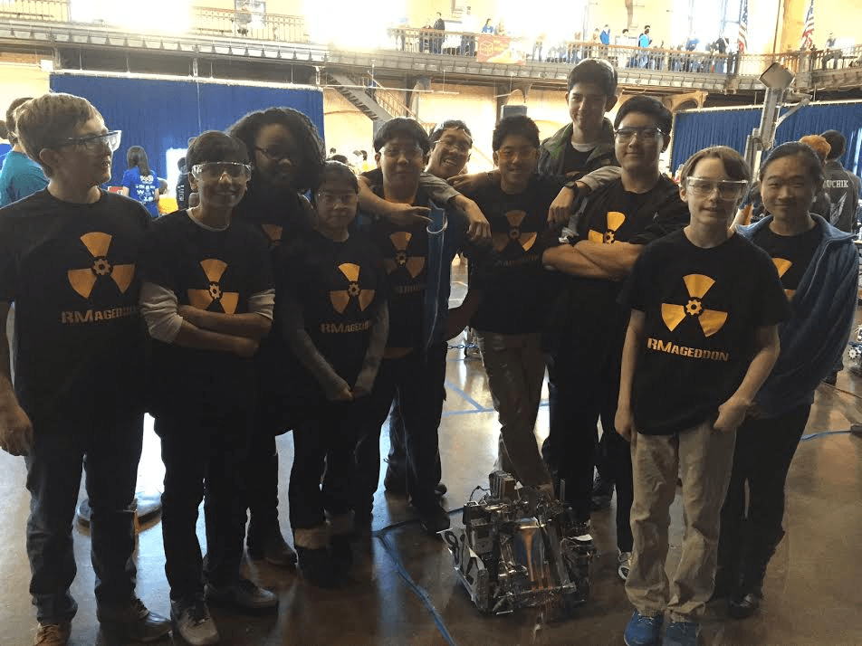

Based out of Richard Montgomery High School in Rockville, MD, RM Robotics currently fields two teams in the FIRST Tech Challenge (FTC). RM Robotics has been competing in FTC since 2010.
RM Robotics Cascade through Maryland States
March 2, 2015
After snow had cancelled Maryland States. Both teams went to Maryland States ready for whatever came at them. RMageddon had a great showing and were always in the top 10 and were selected as an alliance partner. While RM'd and Dangerous had some trouble but still had a great showing and a great time.
At the end of the day, RM'd and Dangerous and RMageddon were both nominated for Promote with their awesome videos and RM'd and Dangerous won promote. RM'D and Dangerous also won first place Inspire and WILL BE ADVANCING TO THE EAST SUPERREGIONALS ON MARCH 19 TO 21 IN SCRANTON, PA!!!!!
A special thanks to all the volunteers and staff who helped make Maryland an awesome place to build robots. Also to JHU for hosting Maryland States. Thanks to Mr. Monteleone, the super principal of RMHS for supporting us at States and to all the parents and mentors who have supported us throughout the season, you are the true heroes of the team.
We also can't forget to congratulate Milka Piszczek, an RM'd and Dangerous Alumni, who was honored as the Maryland FTC volunteer of the year.
A FIRST look at RM'd and Dangerous and RMageddon Promote Videos
February 24, 2015
After many hours of hard work, both RM teams have produced great videos for why we choose FIRST, check it out and subscribe to RMRobotics on youtube. 4 days until States hope to see you there!!!!!
RM'd and Dangerous Competes at Georgetown Prep.
February 8, 2015
It all came down to this last qualifier. And after the winter storm delayed Harford 1, RM'd and Dangerous still threw caution to the wind and emerged with 1st place inspire. Ensuring a spot for both RM Robotics teams to go the Maryland States on the 21st. Thanks to all the great teams, judges, referees, Maryland First and everyone who made these qualifiers possible. See you at States!
RMageddon Storms Harford 2 Qualifier
January 31, 2015
After an intense, fun and fiery day at John Carrol School in Bel Air, RMageddon was able to come out of the fire with the think award and 3rd place Inspire. Great job to everyone on Team 8121 RMageddon!

RM Robotics Host 2nd Montgomery Qualifier
January 18, 2015
Today, RM Robotics hosted the second Montgomery qualifier at Bullis High School. The day was marked with lots of gracious professionalism and tons of fun (because robots!). Special thanks to the Rockville Science Center for their financial and organizational support in hosting this qualifier, to the Bullis School for donating such an amazing venue, to all the volunteers for making the qualifier possible, for participating teams for making the qualifier smooth and awesome and to the Maryland FTC Planning Committe for making it all happen!
RM Robotics Next Steps
January 17, 2015
RM Robotics will be hosting a Maryland qualifying tournament tomorrow at the Bullis School in Potomac, MD! In addition, both Team 8121 and 5421 will be competing again in Maryland at the John Carroll School on January 24th! Both of these events are free and open to the public - we'd love to have you come out and watch!
RM'd and Dangerous Takes On Pennsylvania!
January 17, 2015
Team 5421 RM'd and Dangerous competed in a qualifying event in Pennsylvania today at Penn State York. The competition was intense and the judges and referees were awesome. But RM'd and Dangerous emerged from Pennslyvania with the 1st Inspire Award!!! In addition to this they were nominated for the Think and Motivate Awards. With 1st place Inspire, RM'd and Dangerous earned a slot at Pennyslvania's FTC Championship, which will be held in Millersville, PA on February 28th, where the team will have a chance to advance to the East Super-Regional Championship!
RMageddon's Qualifier Debut
January 10, 2015
RMageddon attended their first qualifier today, at the US Naval Academy in Annapolis. It was a first glimpse of FTC for most of the team, and everyone is now getting ready for their next competition. Please come out and support both Team 8121 and 5421 again at their next Maryland qualifier at the John Carroll School in Bel Air, Maryland on January 24th!
Sidwell Qualifier Results!
December 14, 2014
Thank you to our friends at Sidwell for hosting Team 5421's first qualifier this season! We unfortunately didn't advance to the State Championship; however, we competed in the semifinals, got nominated for the Connect Award, and won the Think Award, so the day still went quite well!
Thanks to everyone who came out to support us! Team 5421's next qualifier will be January 24, 2015 at the John Carroll School in Bel Air, Maryland. Also, please come out and support Team 8121's first qualifier at Dahlgren Hall in the US Naval Academy January 10th!
Game Announcements!
September 6, 2014
The wait is over! The new FTC game, CASCADE EFFECT, has just been released!
RM Robotics had a great time today at the Maryland kickoff for the new season. We led several panels, the presentations from which are now available on our Resources page. A big thanks to Amber Driesman of Team 4318 for co-hosting the Leadership presentation for coaches with us!
Within the next few weeks, we'll have filled out our two teams' rosters and have begun the hard task of building our robots for this new game. Keep checking back for updates on our progress and upcoming events!
Welcome!
August 15, 2014
After many revisions, this is the new website for RM Robotics! Please be patient with our changes and updates over the coming weeks.
Learn more about:
Our two teams, 5421 RM'd and Dangerous and 8121 RMageddon